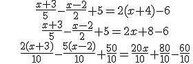
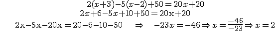
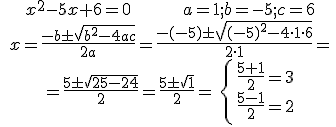
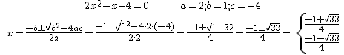
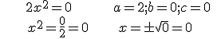
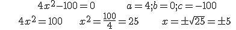
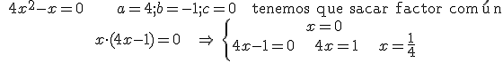
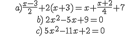

Ecuaciones y sistemas
ejemplos
Ejemplo 1:


Ejemplo 2:

Ejemplo 3:

NOTA: El discriminante, Δ = b2 – 4ac, es el que decide el número de soluciones: si Δ > 0 hay dos soluciones; si Δ = 0 hay una solución y si Δ < 0 no hay solución.
Ejemplo 4: b = c = 0

Ejemplo 5: b = 0

Ejemplo 6: c = 0

Ejercicio. Resuelve las siguientes ecuaciones:

Soluciones: a) 12/5; b) Ø; c) 2 y 1/5
Obra publicada con Licencia Creative Commons Reconocimiento No comercial Compartir igual 3.0